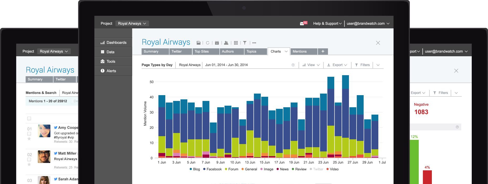
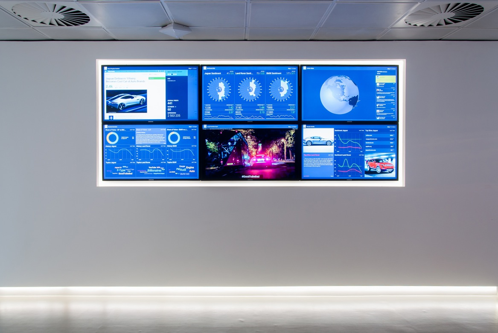

Brandwatch Vizia/
Designing for the unpredictable
Julius Dietz (@juliusdietz) & Dan Neame (@cham)
#insidebrandwatch

Btw: We’re hiring Javascript and Java devs:
- Stuttgart
- Berlin
- Brighton
- San Fran
Brandwatch Analytics/
Web based social media monitoring platform
Brandwatch Vizia/
A realtime data visualisation platform
that brings social data to everyone in your business
9 challenging months
Design Challenge
From single...

...to many
Design Challenge

Variance of data/ movement
Variance of data/ macro micro
Variance of data/ flexibility
Design Challenge
Physical context/ Lighting
Physical context/ Distance
It's just a web app
Uses standard web technology


"A browser"
Device support & Resolution
"4 inch to 4K"
Multiple screen sizes
Different orientations
Retina / non-retina
Breakpoints not workable
100% Fluid, 1 breakpoint if necessary
Fluid layout
Building the Scenes
Multiple customisable visualisations
- The Globe
- Tiles
- Sentiment Barometer
The Globe
Tiles
Barometer
Technology Stack
From front to back:
- D3, Canvas, HTML5 / CSS3
- Backbone.js
- Node.js
- Brandwatch API (Java)
Front end challenges
Runs on walls and in kiosks
Needs to stay running for up to 1 year
Absolutely no memory leaks
We spent a lot of time profiling memory!
Settled on Backbone and vanilla JS, very light
Push technology
Originally, everything went through websockets
We use socket.io, but good argument to use SSE
Websockets don't play nicely with older / strict firewalls
Polling for data, push for anything else
Messages
Remote control
Web platform = <3
Any device, anywhere
Great for updates
Speedy development
Questions!
Thanks!
@juliusdietz & Dan Neame (@cham)
github.com/cham/vizia-pushconf